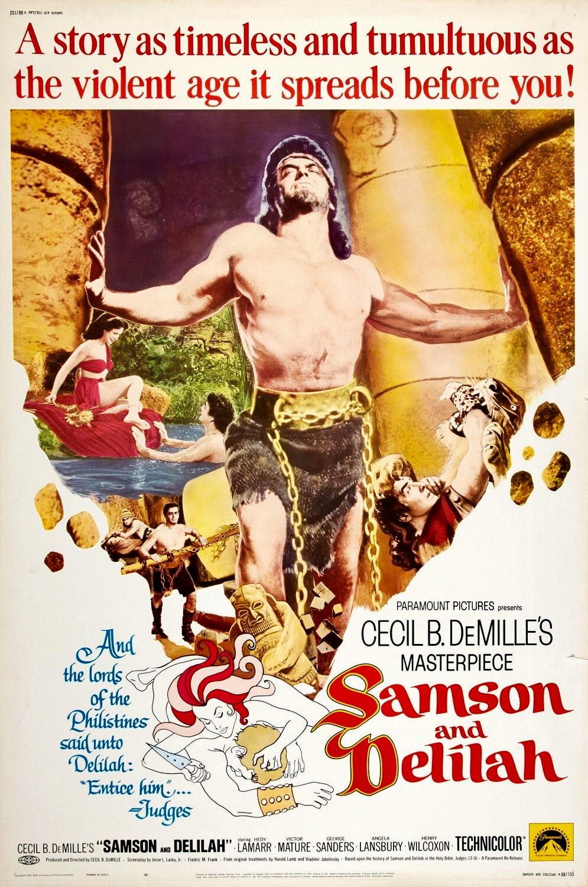

Samson and Delilah
23rd Academy Awards
(Oscars 1951)
5 Nominations, 2 Awards
| Nominations | ||
|---|---|---|
| Category | Nominees | Result |
| Cinematography (Color) | George Barnes | Nominated |
| Art Direction (Color) | Hans Dreier, Ray Moyer, Sam Comer, and Walter Tyler | Won |
| Costume Design (Color) | Dorothy Jeakins, Edith Head, Elois Jenssen, Gile Steele, and Gwen Wakeling | Won |
| Special Effects | Cecil B. DeMille Productions | Nominated |
| Music (Music Score of a Dramatic or Comedy Picture) | Victor Young | Nominated |